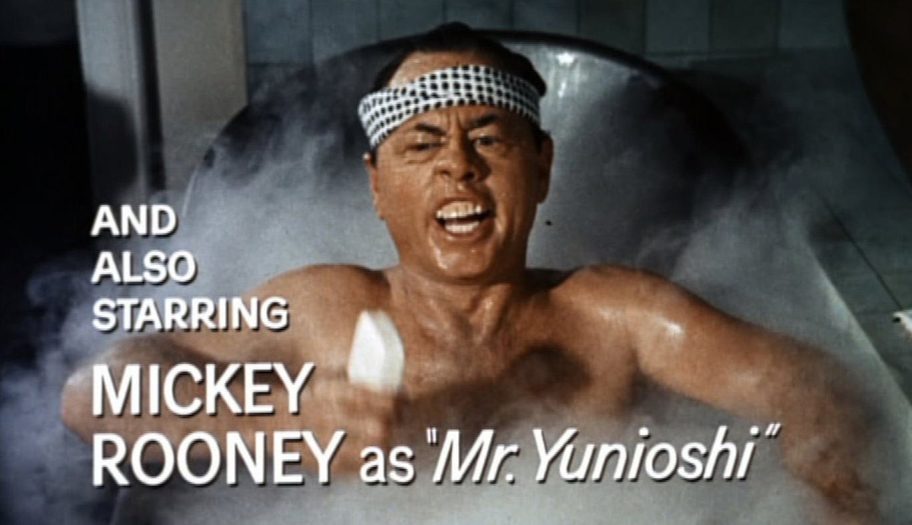
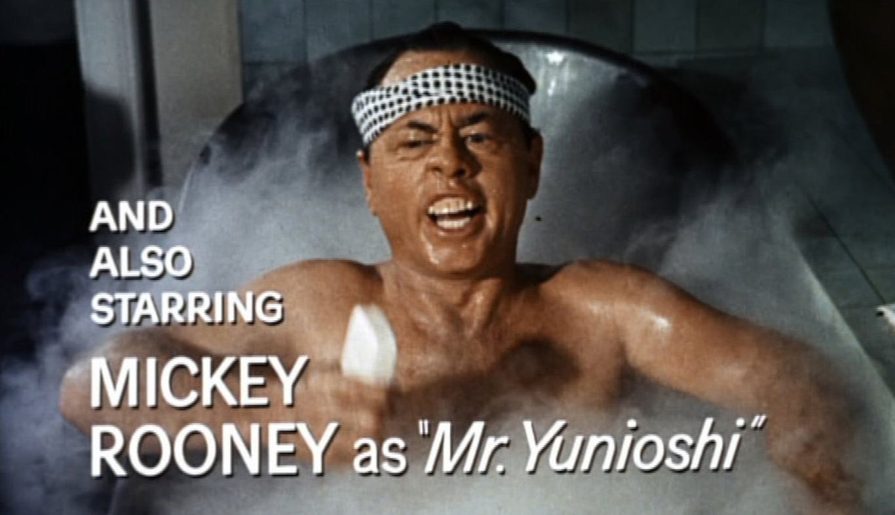

헐리우드 내 인종차별은 꽤나 오래된 이슈지만 그에 대한 비난은 2016년 아카데미 시상식 이후 폭발했다. ‘백인 만의 잔치’로 불린 아카데미는 소셜 미디어에서 ‘오스카는 너무 하얗다’ (#oscarssowhite)라는 해시태그를 통해 인종차별에 대해 비판의 목소리가 높아졌다.
하지만 이것은 오로지 흑인 및 라틴계 인종 차별에 대한 비난이었는지 이 비난에 동참했던 오스카 시상식 호스트 크리스 락도 아시아계 미국인 조크를 통해 헐리웃 내 아시아인 인종차별이 얼마나 가벼운 문제로 인식되는 지를 보여주었다.
#헐리우드
#인종차별
 


우리나라에서 드라마 LOST의 꽈찌쭈로 유명한 배우 대니얼 대 킴과 배우 그레이스 박 두 사람은 CBS 드라마 ‘하와이 파이브 오’ 시리즈에 주연으로 출연해왔으나 함께 출연한 백인 주연 배우들과의 임금 차별로 인해 하차를 결정한 것으로 알려졌다.
두 사람은 드라마의 제작사 측에 다른 두 백인 주연 배우인 알렉스 오로린과 스콧 칸과 동등한 출연료를 요구했으나 CBS측이 받아들이지 않았다. 대신 제작사 측은 두 사람에게 두 백인 배우보다 10~15% 더 낮은 금액을 제시했고, 두 사람은 제시된 임금을 받아들이는 대신 하차를 결정한 것.

화이트워싱은 원작이 있는 작품을 영화화할 때 백인이 아닌 배역에 백인 배우를 캐스팅 하는 것을 말한다. 할리우드의 화이트 워싱 역사는 깊다. 20세기 초부터 백인 배우들이 흑인이나 아시아인 배역을 맡아 인종적인 편견과 과장이 반영된 분장을 하고 등장하는 영화들이 심심찮게 있었다.
위의 사진은 1961년 영화 <티파니에서 아침을>에서 미키 루니가 뻐드렁니 분장을 하고 일본인 지주 역할을 한 것이다. 60년대만해도 백번 양보해서 “아시아계 배우를 구하기 힘들었다”는 핑계가 먹혔을 지 몰라도, 백인이 아시아계 역할을 하는 사례는 최근까지도 빈번하다.
영화 ‘마션’에서도 감독 리들리 스콧이 원작 속 아시아인 캐릭터의 인종을 바꿨다. ‘마션’은 앤디 위어의 동명소설을 원작으로 만든 영화이다. 원작 소설의 과학자 ‘민디 파크’(맥킨지 데이비스 분)을, 영화에서는 백인 배우 맥킨지 데이비스가 맡는데, 원작에서는 한국계 미국인으로 나온다.
‘마션’의 감독 리들리 스콧은 언론을 통해 ‘민디 파크’가 굳이 한국계일 필요가 없다는 이유를 들었다. 원작자는 인터뷰에서 민디 파크를 콕 집어 한국계라고 밝힌 바 있다. 거장이라고 불리는 업계에서 성공한 1세계 백인 남성에게는 굳이 중요하지 않은 설정일 수도 있겠다.
마블 코믹스의 <닥터 스트레인지>에서 에이션트 원은 원래 티베트 인이다. 하지만 영화 <닥터 스트레인지>에서는 켈트족으로 인종이 바뀌면서 그 배역도 백인 배우인 틸다 스윈튼에게 돌아갔다. 아무리 인종을 바꾸더라도 네팔, 부탄, 인도이 아닌 백인으로 바꾼 것은 비판받아 마땅하다.
마블이 티베트가 아닌 켈트족이라는 설정을 선택한 이유가 ‘중국’ 이라는 거대한 시장을 의식한 것이 아니냐는 의견도 있다. 에이션트 원이 티베트인이라면 티벳에 대해 예민한 입장을 취하는 중국 내 흥행은 기대할 수 없기 때문이다. 많은 팬들은 이 루머를 그럴 듯 하게 여기고 있다.

아시안 배우들은 할 수 있는 역할도 적지만 그 역할들이 다양하지도 않아 다양한 커리어를 쌓을 수 없다. 캐릭터의 외형이나 성격 등 수많은 스테레오 타입에 부딛힌다. 이런 편견으로 만들어진 아시안 캐릭터들은 헐리우드 내 아시안 인종차별을 강화시키고 다양성의 발전을 막는 큰 이유이다.
그 중 하나가 아시안 여성 캐릭터들이 하고 나오는 브릿지(streak)이다. 잘 알려진 영화들 중에서만 꼽아보자면 <엑스맨> 시리즈의 블링크와 사일로, <퍼시픽 림>의 마코 모리, <클라우드 아틀라스>의 손미. 이 쯤 되면 아시안 캐릭터라면 거의 브릿지 하나 쯤은 달고 나온다고 보면 된다.
또 곧 개봉할 데드풀 2의 예고편에 쿠츠나 시오리가 맡은 역할이 보라색 브릿지를 한 모습이 포착돼 논란이 일었다. 더불어 근본없는 동양풍의 옷도 비난을 당했다. 엑스맨부터 데드풀까지 폭스는 거의 보라색 브릿지를 한 아시안 여성에 대한 페티쉬가 있는 게 분명하다.
왜 아시안 여성 배우들은 컬러 브릿지가 들어간 캐릭터밖에 연기 할 수 없는가?
캐릭터들의 외형은 무궁무진하게 설정할 수 있다. 머리가 짧은 여성, 머리가 긴 여성, 블론드, 브루넷, 진저까지. 백인들은 다양한 외형의 캐릭터를 연기할 때 동양인이라는 이유만으로 획일화된 외형을 가진 역할밖에 받을 수 없다는 게 합당한가?
남성 배우들도 다를바 없다. 아시안이라서 너드역할이나 태권도(무술)을 하는 역할을 할 수밖에 없는 것이다. 그런 스테레오 타입을 강화시키는 역할만 만들고, 그 역할에 아시안 배우들을 캐스팅하려고 하니까. 실제로 한 아시안 배우가 이런 악습에 관해서 인터뷰 한 적이 있다.
“엔터테인먼트의 스테레오 타입 캐스팅 덕분에 당신들은 나를 제대로 알지도 못하면서 짐작할 것이다. 길을 걷고 있으면 나를 알아가려는 노력도 없이 누군가 나를 ‘무술을 잘하거나 혹은 너드일 것’ 이라고 단정지어 버리는 것을 원하지 않는다.”
“만약 아시아인들이 화면에 더 잘 나온다면, 아마도 당신은 나에 대한 선입견을 가지고 있지 않을 것이다.” 인터뷰 처럼 편견은 현실에서 미디어로, 다시 미디어에서 현실로 돌아온다.
헐리우드 영화 중 아시안이 주연을 맡는 경우는 1%라고 한다. 헐리우드 제작자들이 이것에 대해 흔히 하는 변명은 “아시안 배우를 찾을 수 없다”는 것과 “아시안이 주연인 영화는 흥행하지 못한다” 는 것이 있다. 하지만 우리는 이미 헐리웃에 많은 아시안 배우들이 있는 것을 알고있다.
그렇다면 정말 아시안 배우들이 주연인 영화는 흥행할 수 없을까?
한국계 배우 존 조와 인도계 배우 칼 펜 주연의 영화 <해롤드와 쿠마>는 박스 오피스와 홈 미디어 세일즈 이후 제작 비용 4배의 수익을 얻었다. 반면 같은 시기에 개봉한 크리스 헴스워스(백인) 주연의 영화 <스노우 화이트 앤 더 헌츠맨>은 박스 오피스에서 흥행하지 못했다.
한국계 배우 존 조와 인도계 배우 칼 펜 주연의 영화 <해롤드와 쿠마>는 박스 오피스와 홈 미디어 세일즈 이후 제작 비용 4배의 수익을 얻었다. 반면 같은 시기에 개봉한 크리스 헴스워스(백인) 주연의 영화 <스노우 화이트 앤 더 헌츠맨>은 박스 오피스에서 흥행하지 못했다.
헐리우드의 이런 아시안 차별과 화이트 워싱을 유쾌하게 비꼰 소셜 운동이 있다. 바로 #starringjohncho (존조를 출연시켜라) 이다. 윌리엄 유가 만든 트위터 계정과 웹에서부터 시작된 이 운동은 우리가 알고있는 백인 주연의 영화를 모두 존 조 주연으로 만들어버리는 것이다.
가장 유명한 포스터는 영화 <마션>의 포스터이다. 원 포스터에는 주연 맷 데이먼 (화이트 워싱 영화에 출연한 적 있음)의 사진이 들어가 있는데 그것을 존 조의 얼굴로 바꿨다. 이것을 시작으로 화이트 워싱에 관해 목소리를 낸 적이 있는 대만계 배우 콘스탄스 우의 시리즈도 나왔다.
주연에 백인을 캐스팅하는 것은 흥행과 전혀 상관이 없는 것을 알면서도 헐리우드 스튜디오들은 계속해서 관행을 유지하고 있다. 하지만 지난 몇 년 동안 나온 화이트 워싱 영화를 관객들은 보이콧하고 SNS로 공론화시키면서, 헐리우드에도 변화의 바람이 불기를 바라고 있다.